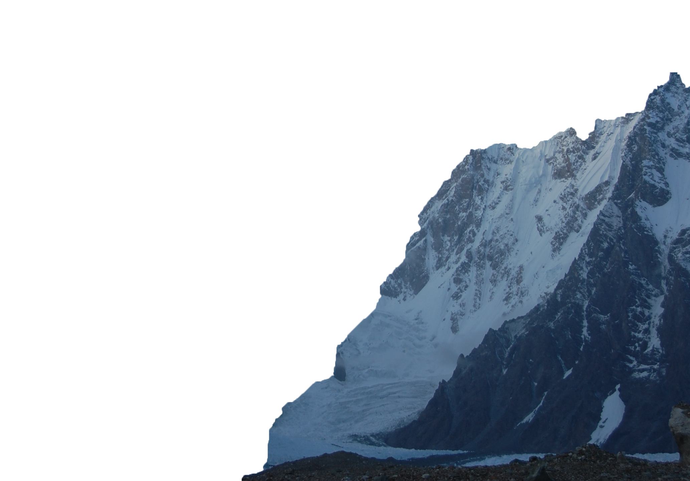
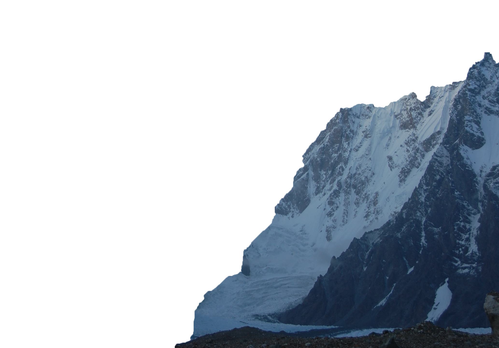
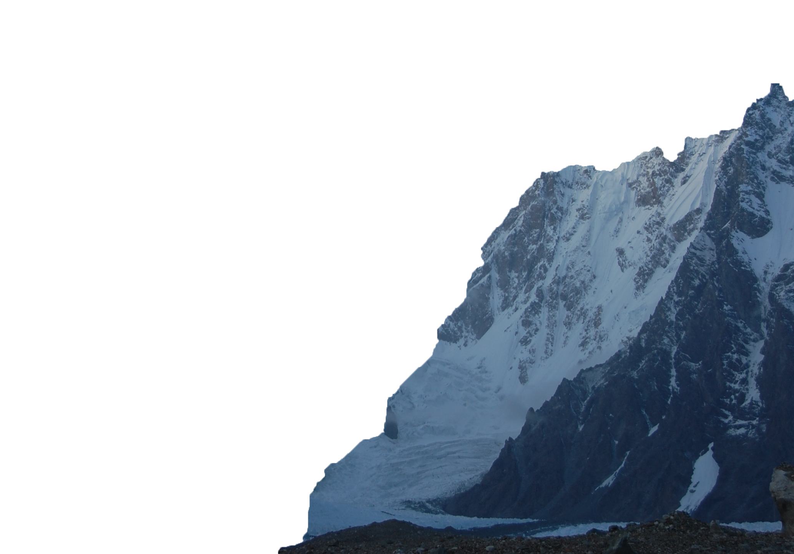
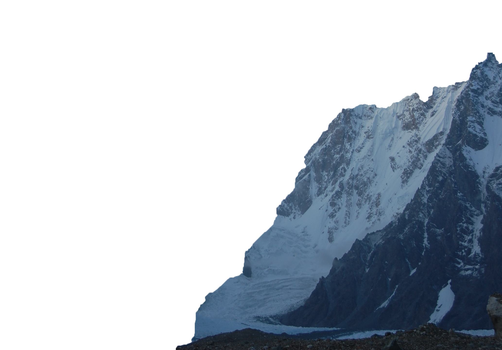

 

Click below image for more details
New Zealand is part of Oceania and is located in the southwest Pacific Ocean. It is also known as “the land of the long white cloud" or "Aotearoa" in Maori. It consists of two main islands(North Island,South Island) and Stewart Island. It offers a very diverse landscape for travellers and has a rich and varied wildlife. The total area of New Zealand is 268,680 km ².The capital city of the country is Wellington.A small island nation home to around 4.5 million people located in the Pacific Ocean, New Zealand is famous for its national rugby team, its indigenous Maori culture and its picturesque landscape.

Wellington was originally named Te Whanganui a Tara, meaning "great harbour of Tara". European settlers arrived in the early 1840s, originally settling in Petone on the northern end of the harbour. ... In 1865, Wellington became the capital of New Zealand and has been the centre of New Zealand government since then.Wellington is located at the Southwestern tip of the North Island, which gives you the opportunity to easily pay the South Island a visit. ... The South Island is one of the most naturally beautiful destinations on earth, and is definitely worth a visit!!.

New Zealand weather and climate is of paramount importance to the people of New Zealand, as many New Zealanders make their living from the land. New Zealand has mild temperatures, moderately high rainfall, and many hours of sunshine throughout most of the country. New Zealand's climate is dominated by two main geographical features: the mountains and the sea.While the far north has subtropical weather during summer, and inland alpine areas of the South Island can be as cold as -10 C in winter, most of the country lies close to the coast, which means mild temperatures, moderate rainfall, and abundant sunshine.